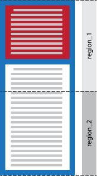

CSS regions Module
Editor's Draft
[DATE]
- This version:
- http://www.w3.org/csswg/css3-regions
- Latest version:
- http://www.w3.org/csswg/css3-regions
- Previous version:
- none
- Editors:
- Vincent Hardy,
Adobe Systems, Inc., vhardy@adobe.com
- Alex Mogilevsky,
Microsoft, alexmog@microsoft.com
- Authors and Former Editors:
- Stephen Zilles,
Adobe Systems, Inc., szilles@adobe.com
- Alexandru Chiculita,
Adobe Systems, Inc., achicu@adobe.com
- Andrei Bucur,
Adobe Systems, Inc., abucur@adobe.com
- Mihnea Ovidenie,
Adobe Systems, Inc., mihnea@adobe.com
- Peter Sorotokin,
Adobe Systems, Inc., psorotok@adobe.com
- Virgil Palanciuc,
Adobe Systems, Inc., virgilp@adobe.com
- Arno Gourdol,
Adobe Systems, Inc., agourdol@adobe.com
Abstract
CHANGES IN PROGRESS, NOT READY FOR REVIEW
The CSS regions module allows content to flow across multiple areas
called regions. The regions do not necessarily follow the document order.
The CSS regions module provides an advanced content flow mechanism, which
can be combined with positioning schemes as defined by other CSS modules
such as the Multi-Column Module [[CSS3COL]] or the Grid Layout Module
[[CSS3-GRID-LAYOUT]] to position the regions where content flows.
Status of this
document
This section describes the status of this document at the time of
its publication. Other documents may supersede this document. A list of
current W3C publications and the latest revision of this technical report
can be found in the W3C technical reports
index at http://www.w3.org/TR/.
This is a public copy of the editors' draft. It is provided for
discussion only and may change at any moment. Its publication here does not
imply endorsement of its contents by W3C. Don't cite this document other
than as work in progress.
The archived public mailing list www-style@w3.org is preferred for
discussion of this specification. When sending e-mail, please put the text
"css3-regions" in the subject, preferably like this: "[css3-regions]
…summary of comment…"
This draft is related to the drafts about Multi-column Layout [CSSMULTICOL], Grid Layout [CSS3GRID], Flexible Box Layout [CSS3FLEXBOX], and Template Layout [CSSTEMPLATELAYOUT].
Table of contents
Introduction
This section is non-normative.
Capturing the complex layouts of a typical magazine, newspaper, or
textbook requires capabilities beyond those available in existing CSS
modules. This is the purpose of the CSS regions module.
The CSS regions module can be seen as an extension of the concept of
multi-column elements. With CSS Multi-column layout [[CSS3COL]], columns
share the same dimensions and define column boxes organized in rows.
Content flows from one column to the next.
The multi-column model is an example of flowing content from one area to
another, where the areas are the multi-column element's column boxes and
the flow is made of the multi-column element's children.
However, for more complex layouts, content needs to flow from one area
of the page to the next without limitation of the areas' sizes and
positions. These arbitrary areas are the target of specific content flows.
In this document these areas are called regions, and the content flows are
called named flows. Regions are based on the rectangular geometry of the
CSS box model. Elements in a named flow are taken out of the normal visual
formatting and rendered in a chain of regions.
Named flows and regions
Consider the layout illustrated in figure 1.
The designer's intent is to position an image in region 'A' and to flow
an article's text from region '1', to region '2', '3' and '4'.
The following code snippet shows the content to flow between the regions
1, 2, 3 and 4.
<div id="article">
<h1>Introduction</h1>
<p>This is an example ...</p>
<h1>More Details</h1>
<p>This illustrates ...</p>
<p>Then, the example ...</p>
<p>Finally, this ...</p>
</div>
CSS layout facilities can position and size regions as needed. However,
there is no existing mechanism to associate the content with the regions so
that content flows as intended. Figure 2 shows an example of the intended
visual rendering of the content.
Since the CSS regions module is independent of the layout of regions and
the mechanism used to create them, the following assumes there is a CSS
selector for the regions and, for the purpose of the example, the selectors
for regions 1, 2, 3 and 4 show as ''<region1_sel>'',
''<region2_sel>'', ''<region3_sel>'' and
''<region4_sel>'' respectively.
<style>
#article {
flow-into: article_flow;
}
<region1_sel>, <region2_sel>,
<region3_sel>, <region4_sel> {
content: flow-from(article_flow);
}
</style>
The 'article_flow' value on the 'flow-into' property directs the ''#article''
element to the 'article_flow' named flow. Setting the regions' content property
to 'flow-from(article_flow)' associates these regions with the named flow: the flow is
''poured'' into the desired regions.
Regions styling
Region styling allows content to be styled depending on the region it
flows into. It is a form of context-based styling, similar to Media Queries [[MEDIAQ]] which enable or disable
selectors depending on the rendering context. With region styling,
additional selectors may apply depending on the region into which content
flows.
In our example, the designer wants to make text flowing into region 1
larger, bold and dark blue. In addition, <h1> headers should be run-ins and crimson.
This design can be expressed with region styling as shown below.
<style>
/*
* Default article styling.
*/
#article {
color:#777;
text-align: justify;
}
#article h1 {
border-left: 1px solid #777;
padding-left: 2ex;
}
/*
* Additional styling to apply to content when it falls into
* region1
*/
@region <region1_sel> {
#article::region-lines {
font-weight: bold;
color: #0C3D5F;
font-size: larger;
}
#article h1 {
color: crimson;
display: run-in;
border: none;
padding: 0px;
}
}
</style>
The '@region' rule for region 1 limits its selectors to content flowing
into region 1. The following figure shows how the rendering changes if we
do not increase the font size nor make it bold for content flowing into
region 1. As more content can be fitted, more content is subject to the
contextual selectors, resulting in more dark blue text into region 1.
The ''::region-lines'' pseudo-element is described later in this
specification.
CSS regions concepts
This section is non-normative.
Regions
A region is an element that
generates a block container
box and has an associated named flow (see the 'content'
property).
A region's intrinsic width is zero.
Named flow
A named flow is the ordered sequence of elements
associated with a flow with a given identifier. Elements in a named flow are ordered
according to the document order.
Elements are placed into a named flow with the 'flow-into' property.
The elements in a named flow are laid out in the chain of regions that
are associated with this named flow. The 'region-order' property defines how regions are organized in to a region chain.
Content from a named flow is broken up between regions according to the
regions flow breaking rules.
Regions flow breaking rules
Breaking a named flow across multiple regions is similar to breaking a
document's content across multiple pages (see [[CSS3PAGE]]) or a multi-column element's content
across column boxes (see [[CSS3COL]]). One difference is that
page boxes are generated based on the available content whereas regions are
a predefined set of recipient boxes for the named flow content.
Regions are organized in to a region chain (see the 'region-order' property).
Each region in turn consumes content from its associated named flow. The named flow content is
positioned in the current region until a
natural or forced region break occurs, at which point the current region becomes the next one in the
region chain. If there is no more
region in the region chain and there is still content in the
flow, the positioning of the remaining content is controlled by the
'region-overflow' property on the last region in the
chain.
Relation to document events
The CSS regions module does not alter the normal processing of
events in the document tree. In particular, if an event occurs on an
element that is part of a named flow, the event's
bubble and capture phases happen following the document tree order.
Properties and rules
The 'flow-into' property
The ‘flow-into’ property can place an element into a named flow. Elements that
belong to the same flow are laid out in the regions associated with that flow.
| Name: |
flow-into |
| Value: |
<ident> | auto |
| Initial: |
auto |
| Applies to: |
any element |
| Inherited: |
no |
| Percentages: |
N/A |
| Media: |
visual |
| Computed value: |
as specified |
- auto
- The element is not moved to a named flow and normal CSS processing takes place.
- <ident>
- The element is placed into the flow with the name '<ident>'. The
element is said to have a specified
flow. The values 'none', 'inherit', 'default' and 'initial' are invalid flow
names.
A named flow needs to be associated with one or more regions for its
elements to be visually formatted. If no region is associated with a given
named flow, the elements in the named flow are not rendered: they do not
generate boxes and are not displayed.
The children of an element with a specified flow may themselves have a
specified flow.
If an element has a the same specified flow value as one of its
ancestors, it becomes a
sibling of it's ancestor for the purpose of layout in the regions laying out content
content from that flow.
The 'flow-into' property does not affect the CSS cascade and inheritance for
the elements on which it is specified. The 'flow-into' property affects the visual
formatting of elements placed into a named flow and of regions laying out
content from a named flow.
The edges of the first region in a region chain associated with a named flow establish
the rectangle that is the initial containing block of the named flow.
Elements in a named flow are sequenced in document order.
This note is informative.
The 'flow-into' property moves an
element into the flow and the interplay with selectors should be considered carefully.
For example,
table {flow-into: table-content}
will
move all tables in the 'table-content' named flow. However, the
table * {flow-into: table-content}
selector will move all
the descendants of table elements in the 'table-content' named flow. This will make all
the descendants of table elements siblings in the named flow. Having the descendants become siblings
in the named flow results
in a different processing (see the CSS 2.1's anonymous table objects). This note illustrates how authors must exercise caution when choosing a particular
selector for setting the 'flow-into' property to avoid unintended results.
If the ‘flow-into’ property is specified on an
<iframe>, an <object> or a <embed> element, the
‘display’ property is computed to ‘none’ and the referenced document within the element is used as the named flow.
In the case of the <object> element if fallback occurs and the fallback element has a referenced document then that
document is used as the named flow, otherwise the fallback element itself is added to the named flow.
Any properties set on the <iframe>/<object>/<embed> elements (including margin, border, padding, background) have no effect.
This redirection of content does not change representation of the elements in the document tree, just as for any other
source of named flow; in this case the <iframe> still provides security checks for script in content (and sandbox if required).
Events and CSS cascading work the same way as in a documents hosted in regular <iframe>s.
Region styling applies to content coming from <iframe>/<object>/<embed> sources the same way it applies to other flow content.
The 'flow-into' does not apply to the ::first-line and ::first-character.
The effect of 'flow-into' on generated content such as ::marker,
::before and ::after
is undefined. This may change depending on implementation feedback.
The 'content' property
This specification extends the definition of the 'content' property.
| Name: |
content |
| Value: |
normal | none | flow-from(<ident>)| [ <string> |
<uri> | <counter> | attr(<identifier>) |
open-quote | close-quote | no-open-quote | no-close-quote ]+ |
inherit |
| Initial: |
normal |
| Applies to: |
non-replaced block elements and the ::before and ::after
pseudo-elements |
| Inherited: |
no |
| Percentages: |
N/A |
| Media: |
visual |
| Computed value: |
as specified |
- none
- For ''::before'' and ''::after'' pseudo-elements, the
pseudo-element is not generated. For other elements, the element will
not get any content for its visual formatting
- normal
- Computes to 'none' for the ''::before'' and ''::after''
pseudo-elements. For other elements, the element formats its
children as defined by the CSS Visual Formatting Model [[CSS21]].
- <string>
- Text content (see the section on strings).
- <uri>
- The value is a URI that designates an external resource (such as an
image). If the user agent cannot display the resource it must either
leave it out as if it were not specified or display some indication
that the resource cannot be displayed.
- <counter>
- Counters may be specified with
two different functions: 'counter()' or 'counters()'. The former has
two forms: 'counter(name)' or 'counter(name,
style)'. The generated text is the value of the innermost
counter of the given name in scope at this pseudo-element; it is
formatted in the indicated style
('decimal' by default). The latter function also has two forms:
'counters(name, string)' or
'counters(name, string, style)'. The
generated text is the value of all counters with the given name in
scope at this pseudo-element, from outermost to innermost separated by
the specified string. The counters are rendered in the indicated
style ('decimal' by default). See the
section on automatic counters and numbering for
more information. The name must not be 'none', 'inherit' or 'initial'.
Such a name causes the declaration to be ignored.
- open-quote and close-quote
- These values are replaced by the appropriate string from the
'quotes' property.
- no-open-quote and
no-close-quote
- Introduces no content, but increments (decrements) the level of
nesting for quotes.
- attr(X)
- This function returns as a string the value of attribute X for the
subject of the selector. The string is not parsed by the CSS processor.
If the subject of the selector does not have an attribute X, an empty
string is returned. The case-sensitivity of attribute names depends on
the document language.
- flow-from(<ident>)
- If the element is not a block container box, the value evaluates to 'normal'.
Otherwise, the element becomes a region and is ordered in a
region chain according to its document order and
'region-order' property. The content from the flow with the <ident>
name will be broken into segments and visually formatted in the
principal boxes of the regions in the region chain. If there is no flow with name
<ident>, then the element does not format any content visually.
Likewise, if
the element is part of the flow with name <ident>, then
the element does not format any content visually.
This might be expanded in future versions of the specification
to allow other types of containers to receive flow content.
When the 'content' property is set to a value other than 'normal', the element's document children are not visually formatted unless they are directed to a named flow
referenced by one or more regions.
This note is informative.
The 'content' property applies to block-level elements and the
'::before' and '::after' pseudo elements. User agents may apply the
content property to inline elements. The behavior is undefined in that
case, but is generally expected to be similar to that of inline
'::before' and '::after' pseudo-elements.
In particular, note that the behavior of a '::before' or '::after'
pseudo-element with a 'display' value that makes it an inline element
combined with a 'content' value set to 'flow-from(<ident>)' is
undefined.
NOTE: stale issue because the spec. now contains a way to address these
requirements.
Should we consider adding the ability to do the following:
- Support repeatable content. For example, have a repeatable
heading at the start of each region where content flows.
- Support flow breaking marks. It might be very useful to support
a mark (such as "
...") at the
region breaking points to indicate that content has been broken out
and is continuing on a different region.
First resolution on
Regions at the Seattle Face to Face meeting, July 2011
Mailing
list comment
''content: flow-from(<ident>)'' moves an element to a named
flow. Should we allow the content to be copied to a flow instead of
moved to a flow. For example:
#quote_A { flow-into: "quotes"; content: contents; }
would keep ''#quote_A'' in the normal flow but also copy its content
to the ''quotes'' flow. This essentially clones the node and raises
questions regarding DOM access, CSSOM view and the computed style.
Regions create a new stacking context.
Regions establish a new block formatting Context.
This note is informative.
With regions, an element may be split across multiple regions and these
regions may overlap (for example if they are absolutely positioned).
So fragments of the same element can overlap each other.
Since each element has a single z-index, it would be required to
find another mechanism to decide in which order the
fragments are rendered. Since each region creates a new stacking
context, it is clear that each region is rendered separately and their
rendering order follows the regular CSS rendering model.
Floats or other exclusions (see [[CSS3EXCLUSIONS]]) potentially impact the
content laid out in regions, just as for non-regions.
In the following example, the inline content coming from the
body_text named
flow wraps around the #float box.
<style>
#float {
float: left;
width: 100px;
height: 300px;
}
#region1, #region2 {
width: 200px;
height: 200px;
content: flow-from(body_text);
}
#content {
flow-into: body_text;
}
</style>
<div id="float"></div>
<div id="region1"></div>
<div id="region2"></div>
<div id="content"></div>
The 'region-order' property
Defines the ordering of the chain of regions into which content flows.
If region A and region B are in the same chain of regions and the
‘region-order’ of region A is lower than that of region B, then region A
will precede region B in that chain: content will flow into region A before
it flows into region B.
| Name: |
region-order |
| Value: |
<integer> |
| Initial: |
0 |
| Applies to: |
any block container |
| Inherited: |
no |
| Percentages: |
N/A |
| Media: |
visual |
| Computed value: |
as specified |
- <integer>
- Specifies the region's priority in the chain it belongs to, i.e..,
the chain of regions associated with the same content flow. Negative
values are allowed.
If two or more regions with the same 'flow-from( <ident>)' value
for their 'content' property, they are first sorted according to their
'region-order' value. If multiple regions in have the same 'region-order'
value, they are sorted according to the document order.
The working group made that the first
version of Grid layout would not have pseudo-elements for grid cells,
making this issue stale.
CSS Modules should define the document order for pseudo elements. For
example, the [CSSGRID] specification should define the document order
for the '::grid-cell' pseudo elements (e.g., row-major sorting or
column major sorting of cells).
Region
flow break properties: 'break-before', 'break-after', 'break-inside'
User agents laying out content in multiple regions, the must
determine where content breaks occur. The problem of breaking content into
segments fitting in regions is similar to breaking content into pages or
columns.
Each break ends layout in the current region and causes remaining pieces
of content from the named flow to be visually formatted in the following
region, in the order defined by the 'region-order' computed values. Note
that there is no region break in the last region associated with a named
flow.
The following extends the 'break-before', 'break-after' and
'break-inside' properties from the [[!CSS3COL]] specification to account
for regions. The additional values are described below.
| Name: |
break-before |
| Value: |
auto | always | avoid | left | right | page | column | region |
avoid-page | avoid-column | avoid-region |
| Initial: |
auto |
| Applies to: |
block-level elements |
| Inherited: |
no |
| Percentages: |
N/A |
| Media: |
paged |
| Computed value: |
specified value |
| Name: |
break-after |
| Value: |
auto | always | avoid | left | right | page | column | region |
avoid-page | avoid-column | avoid-region |
| Initial: |
auto |
| Applies to: |
block-level elements |
| Inherited: |
no |
| Percentages: |
N/A |
| Media: |
paged |
| Computed value: |
specified value |
| Name: |
break-inside |
| Value: |
auto | avoid | avoid-page | avoid-column | avoid-region |
| Initial: |
auto |
| Applies to: |
block-level elements |
| Inherited: |
no |
| Percentages: |
N/A |
| Media: |
paged |
| Computed value: |
specified value |
These properties describe page, column and region break behavior
before/after/inside the generated box. These values are normatively defined
in [[!CSS3COL]]:
- auto
- Neither force nor forbid a page/column break before (after, inside)
the generated box.
- always
- Always force a page break before (after) the generated box.
- avoid
- Avoid a page/column break before (after, inside) the generated
box.
- left
- Force one or two page breaks before (after) the generated box so
that the next page is formatted as a left page.
- right
- Force one or two page breaks before (after) the generated box so
that the next page is formatted as a right page.
- page
- Always force a page break before (after) the generated box.
- column
- Always force a column break before (after) the generated box.
- avoid-page
- Avoid a page break before (after, inside) the generated box.
- avoid-column
- Avoid a column break before (after, inside) the generated box.
This specification adds the following new values:
- region
- Always force a region break before (after) the generated box.
- avoid-region
- Avoid a region break before (after, inside) the generated box.
When a break splits a box, the box's margins, borders, and padding have
no visual effect where the split occurs. However, the margin immediately
after a forced page/column/region break will be preserved. A forced
page/column/region break is a break that does not occur naturally.
Note: When the 'avoid' value is used, regions may
overflow. In that case the 'overflow' property specified on the region
element should be used to determine how to render the overflow.
The region-overflow property
| Name: |
region-overflow |
| Value: |
auto | break |
| Initial: |
auto |
| Applies to: |
region elements |
| Inherited: |
no |
| Percentages: |
N/A |
| Media: |
paged |
| Computed value: |
specified value |
The 'region-overflow' property controls the behavior of the last region associated with a named
flow.
- auto
- Content flows as it would in a regular content element. If the
content exceeds the container box, it is subject to the overflow
property's computed value on the region element. Region breaks must be
ignored on the last region.
- break
- If the content fits within the region element, then this
property has no effect. If the content does not fit within the
region element, the content breaks as if flow was going to
continue in a subsequent region. See the breaking rules section. A forced region break takes precedence over
a natural break point.
The following code sample illustrates the usage of the 'region-overflow'
property.
<style>
#article {
flow-into: "article";
}
#region_1, #region_2 {
content: flow-from(article);
region-overflow: break; /* or none */
overflow: visible; /* or hidden */
}
</style>
<div id="article">...</div>
<div id="region_1"></div>
<div id="region_2"></div>
The 'overflow' property is honored on a region: if region content overflows,
such as the borders of elements on the
last line, the 'overflow' property controls the visibility of the overflowing
content. See the 'overflow' property definition
([[CSS21]]).
The @region rule
An '@region' rule contains style declarations specific to particular
regions.
The '@region' rule consists of the keyword '@region' followed by a
selector
and a declarations block. The '@region' rule and the selector constitute
the region's 'flow segment' selector. The region's flow segment selector
specifies which range of elements in the flow are subject to the following
declaration blocks: it applies to the range (see
[[DOM-LEVEL-2-TRAVERSAL-RANGE]]) from the region's flow that flow in the
selected region(s).
Only elements that are fully in the 'flow segment' may match any of the
selectors found in the style rule. If an element is split across regions,
it will not be subject to region styling in any of the regions it is part
of. However, it's children element or pseudo-elements may be.
In addition, the ''::region-lines'' pseudo-element can be used to select
the inline content of an element that falls into a particular region.
@region <selector> {
... CSS styling rules ...
}
In the following example, the named flow 'article_flow' flows
through 'region_1' and 'region_2'.
<style>
#div_1 {
flow-into: article_flow;
}
<region1_sel>, <region2_sel> {
content: flow-from(article_flow);
}
/* region style RSA */
@region <region1_sel>, <region2_sel> {
p::region-lines {...}
div {...}
p {...}
}
/* region style RSB */
@region <region1_sel> {
p {...}
#p_2::region-lines {...}
}
</style>
<div id="div_1">
<p id="p_1">...</p>
<p id="p_2">...</p>
</div>

- div div_1
- paragraph p_1
- paragraph p_2
- range of flow that fits into
region_1
- range of flow that fits into
region_2
The region style ''RSA'' applies to flow content that fits in either
'region_1' or 'region_2'.
The first rule set ''p::region-lines {...}'' uses the
''::regions-line'' pseudo-element. Since all the content is fitted in
either 'region_1' or 'region_2', this rule set applies to all content
lines.
The second rule set ''div {...}'' applies to all <div> elements that fit fully into 'region_1' or
'region_2'. In our example, there is no <div> in the flow that fits fully in a region,
because div_1 is split between 'region_1' and
'region_2'.
The third rule set ''p {...}'' applies to all <p> elements that fit fully into 'region_1' or
'region_2'. In our example, only p_1 fully
fits in a region, 'region_1'.
The region style ''RSB'' applies to flow content that fits in
'region_1'.
The first rule set ''p {...}'' matches p_1
because that paragraph fully fits in 'region_1'.
The second rule set ''#p_2::region-lines {...}'' matches lines in
p_2 that flow into 'region_1'. These lines
will be subject to the additional style.
Making issue stale because this issue has not been raised on the
mailing list and we will wait for implementation feedback.
Is the proposed restriction that elements are only selected selector in
a rule set appearing in an @region rule sufficient?
Moved to specification Wiki.
There is
concern
that the ''first-line'' precedent is underspecified and that more
specification is needed in addition to referencing the existing
precedent.
The specificity of the selectors in a '@region' rule is calculated as
defined in
the CSS Selectors module (see [[SELECT]]). In other words, the '@region'
rule adds an extra condition to the selector's matching, but does not
change the selector's specificity. This is the same behavior as selectors
appearing in '@media' rules declaration blocks (see [[MEDIAQ]]), where the
rule does not influence the selectors' specificity.
Consequently, selectors that match a given element (as describe above),
participate in the CSS Cascading
order as defined in [[!CSS21]].
Pseudo-elements
It can be useful to visually mark the content to highlight
that content is flowing from region to region. For example, a marker such
as 'continues on page 3' clearly indicates, at the end of a
region, that there is more content in the flow which can be found
on 'page 3' (in this example, the notion of page is application specific).
The '::region-before' and
'::region-after' pseudo-elements let content authors mark the beginning and
end of a region with such markers.
The '::region-before' and '::region-after' pseudo-element are distinct from the
'::before' and '::after' pseudo elements (see [[!SELECT]]) in the way they are
processed, as explained in the next section.
Region markers processing model
The '::region-before' and '::region-after' pseudo-elements are laid out prior
to laying out other content in the region. They are used as exclusions
(see [[CSS3EXCLUSIONS]]) when laying out the content.
The ::region-before and ::region-after pseudo-elements
The '::region-before' and '::region-after' pseudo-elements have the same definition
as the '::before' and '::after' pseudo-elements from the CSS3 Selectors specification ([[!SELECT]]). However, their processing model is
different, as explained in the previous section.
CSSOM view and CSS regions
Since content may flow into multiple regions, authors need a way to
determine if there are enough regions to flow all the content from a named
flow. This is especially important considering that the size of regions may
change depending on the display context. For example, flowing the same
content on a mobile phone with a small screen may require more regions than
on a large desktop display.
Another example where creating more regions might be needed: if
the user may change the font size of text flowing through regions, new
regions may be needed to accommodate for the additional space required to
fit the larger text or some regions may need to be removed for smaller text.
Since an element may be split into multiple regions, invoking
getClientRects
on it must return the list of rectangles for the element in all the
regions it is part of.
The NamedFlow interface
The getFlowByNameDocument interface provides access to the document's named flow instances.
[Supplemental] interface Document {
NamedFlow getFlowByName(DOMString name);
};
The NamedFlow
interface offers a representation of the named flow.
interface NamedFlow {
readonly attribute boolean overflow;
};
The overflow property is true if the named flow does not
fully fit in the associated regions. Otherwise, it is false. A
NamedFlow object is live.
With the NamedFlow
interface, authors can easily check if all content has been fitted into
existing regions. If it has, the overflow property would be false.
Extension to the Element
interface
When an region is an actual element,
it is convenient to easily find out if content fully fits into the
region or not. The supplemental interface on Element provides that functionality.
[Supplemental] interface Element {
readonly attribute DOMString regionOverflow;
getter Range[] getRegionFlowRanges();
};
The regionOverflow attribute can take one of the following
values:
- 'overflow'
- the region element's content overflows the region's content box.
Note that the region's
overflow property value can be used to control the
visibility of the overflowing content. This means that the region is
the last one in the region chain and
not able to fit the remaining content from the named flow.
- 'fit'
- the region element's content fits into the region's content box.
It does not overflow. If the region is the last one in the region chain, it means that the content fits
without overflowing. If the region is not the last one in the region
chain, that means the named flow
content is further fitted in subsequent regions. In particular, in this
last case, that means the region may have received no content from the
named flow (for example if the region
is too small to accommodate any content).
- 'empty'
- the region element has no content and is empty. All content from
the named flow was fitted in regions
with a lower 'region-order' value.
- 'undefined'
- The element is not a region.
The getRegionFlowRanges method returns
an array of
Range instances corresponding to the content from the region flow that
is positioned in the region.
If an element is not a region, the getRegionFlowRanges
method throws a DOMException with the
INVALID_ACCESS_ERR error code.
The Element interface extension is only available to regions that are
document elements and not to regions that are pseudo-elements.
ACTION-350 was created
to add the API to the specification draft.
It has been suggested
to add an API to find which region displays an element in a named flow.
Should we add such an API? How would it work in a 'multi-view' context
as suggested by Alex.
Region flow layout events
Region Event Targets
dispatch regionLayoutUpdate events when there is a possible layout change of their named flow segment.
| Type |
regionLayoutUpdate |
|---|
| Interface | UIEvent |
|---|
| Sync / Async | Async |
|---|
| Bubbles | Yes |
|---|
| Target | Element |
|---|
| Cancelable | Yes |
|---|
| Default action | none |
|---|
| Context info |
|
|---|
Relation to other
specifications
This specification is related to other specifications as described in
the references section. In addition, it is
related to the following specifications:
- CSS Exclusions Module [[CSS3EXCLUSIONS]]. This module defines a
generic way to define arbitrarily shaped exclusions into which content
can flow or around which content can flow. This can be seen as an
extension to the way CSS floats provide rectangular areas into which
content flows and around which content flows. In advanced layout
designs, it is expected that the CSS Exclusions module will be commonly
combined with the CSS regions module.
- CSS Line Grid Module [[CSS3LINEGRID]]. This module defines a
concept of line grid to align the position of lines in different
elements. The line grid functionality is related and needed for
aligning content flowing in separate regions.
Changes
- Editorial changes (typos, rephrasings).
- Made 'region-order' a <integer> and not a <float> following a working group
resolution
- Added Alex Mogilevsky as an editor
- Flow names became <indent> instead of <string> following a working group
resolution
- Removed issue about possibly altering the DOM Events model for region events following
a working group
resolution
- Made the "relation to document events" section informative following a working group
resolution
- Removed issue in section "The NamedFlow interface" following the working group's
resolution to
have both NamedFlow and the Element interface extension
- Following a working group resolution:
- Turned the first issue in the "Extensions to the Element interface" into a note
explaining that the NamedFlow interface can be used when regions are pseudo-elements.
- Added NamedFlowUpdate
- Excluded 'none', 'inherit' and 'initial' from the possible identifier names on
the flow property following discussion on the mailing list.
- Simplified integration discussion on multi-column layout and just state that since
column boxes are not addressable by selectors, they cannot be regions.
- Added specification of how the 'flow-into' property interacts with object, embed and iframe
elements.
- Excluded 'default' from the possible identifier names on the flow property because it
may get reserved.
- Added to the definition of 'auto' on 'region-overflow' specifying that region breaks must
be ignored.
- Renamed 'Document.flowWithName' to 'Document.getFlowByName' since it is not a property.
- Added a note that a 'NamedFlow' instance is live.
- Added an 'undefined' string value to the regionOverflow property on the Element interface
extension.
- Renamed NamedFlowEvent to regionLayoutUpdate to avoid having 'Event' in the event name.
- Added description for special behavior of iframe/object/embed as
flow source
- Removed issue on copying content to a named flow instead of moving elements to named
flow following working group resolution.
- Removed issue on content:flow-from v.s., flow-from property following working group resolution.
- Renamed 'flow' to 'flow-into' following working group resolution.
- Updated the css3-grid-align example following working group resolution that
it should use <div> instead of grid-cell pseudo elements that were removed
from the CSS Grid Layout specification.
- Renamed 'from-flow' to 'flow-from' following a working group resolution.
- Limited the applicability of 'content: flow-from()' to block container box and added
a note that this might be expanded in the future, following a working group resolution.
- Removed issue about API to find which region displays an element in a named flow
since ACTION-350 was
created to add this API.
- In the 'flow' property description, removed the required wrapper anonymous
block as agreed on mailing list discussion.
- Reworded the paragraph on how regions create a new stacking context, as
per the mailing list discussion.
- Reworked the "CSS regions Model" section to now be "CSS regions Layout". Moved the
definition of a region as the first sub-section.
- Removed the "Visual Formatting Model and Flows" section to match the new Regions Model
(now CSS regions Layout) section.
- Moved the sections on allowed region breaks, forced region breaks and "best" regions
breaks to follow the property definitions to follow the formatting of the paged
media section in CSS 2.1.
- Added note about why regions create a new stacking context following the discussion
on the mailing list.
- Removed sentence about content:none making elements disconnected following the
discussion on the mailing list.
- Removed sentence about content:none making elements disconnected following the
discussion on the mailing list.
- Added the ::region-before and a ::region-after pseudo-elements.
- Added note of caution when using selectors and the 'flow-into' property following
a mailing list discussion.
- Removed sections about allowed, forced and best region breaks to align with the
multi-column specification approach and until the group agrees on where and how the
general issue of breaks (regions/pages/columns) should be addressed.
- Removed the section on Integration with other specifications since specifications that
was superfluous especially since there is no specific integration with multi column,
grid or template layout.
- Added a note that regions establish a new block formatting context.
- Renamed content-order to region-order.
- Added a note about overflowing content in regions (e.g., for content with borders).
- Added a note that a region cannot layout content it is part of (to avoid creating a
circular dependency) in the flow-from description, specifying that if flow-from
references the flow an element is part of, then the element does not format
anything visually.
Acknowledgments
References
Normative references
Other references
Index
Property index